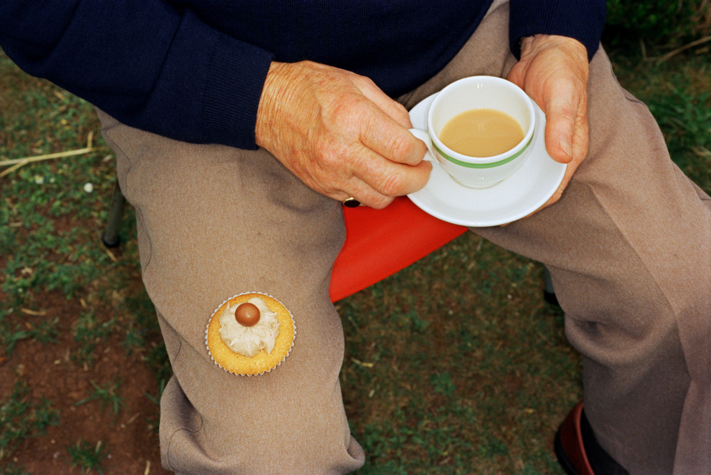

Martin Parr (23 May 1952 - 6 December 2025)
Martin Parr (23 May 1952 - 6 December 2025) was an English documentary photographer.
He was known for his photographic projects that take an intimate, satirical and anthropological look at aspects of modern life, in particular documenting the social classes of England, and more broadly the wealth of the Western world.
Since 1994, Parr had been a member of Magnum Photos. He had around 60 solo photobooks published, and had featured in around 90 exhibitions worldwide, including the international touring exhibition ParrWorld, and a retrospective at the Barbican Arts Centre, London, in 2002.
Parr has said of his photography:
The fundamental thing I'm exploring constantly is the difference between the mythology of the place and the reality of it...Remember I make serious photographs disguised as entertainment. That's part of my mantra. I make the pictures acceptable to find the audience but deep down there is actually a lot going on that's not sharply written in your face. If you want to read it you can read it.
